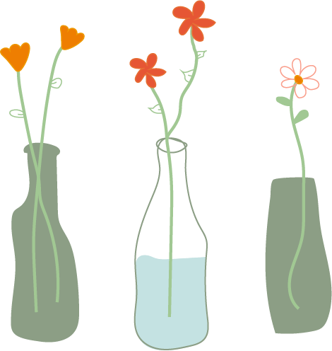

plantenvazen maken:
Het interieur van Cafe de Ceuvel bestaat vooral uit hergebruikte materialen, in deze workshop gaan we daar ook gebruik van maken. We gaan namelijk plantenvazen maken dmv gebruikte glazen flessen te gebruiken (denk aan bier en wijn flessen.) Je bent en creatief bezig en duurzaam, wat wil je nog meer?
Benodigheden:
Glazen flessen (denk aan bier en wijn flessen)
stickerverwijderaar (voor als er nog een sticker of etiket op de fles zit.)
paar leuke bloemen en/of planten voor in de vaas.
versiering: zoals touw, lint, verf en stickers
Instructies:
Nu je alle voorwerpen bij elkaar hebt kunnen we beginnen met het maken van onze vazen waar we leuke bloemetjes in kunnen stoppen.
Verzamel glazen flessen die je leuk vindt voor deze workshop, zorg ervoor dat ze schoon zijn.
Verzamel leuke plantjes en/of bloemen om in je vaas te stoppen.
verwijder etiketten, stickers of lijmresten van de flessen.
Kies een leuk design en versier de flessen naar je eigen stijl een smaak. Maak bijvoorbeeld gebruik van verf en lint.
Als je de fles hebt versierd naar je eigen smaak is het tijd om je fles te vullen met water en je mooie bloemen en/of planten erin te stoppen.
Zorg ervoor dat de planten genoeg zonlicht krijgen en je ze goed water geeft.
klaar, zo makkelijk was het om je eigen vaas te maken, leuk toch? Deze workshop is ook leuk om met je vrienden of vriendinnen te doen en zelf allemaal een leuke en duurzame vaas te maken in jullie eigen stijl.